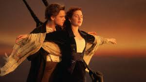

Fotos
- 
Titanic, EUA, 1997
Jack Dawson (Leonardo DiCaprio) é um jovem aventureiro que, na mesa de jogo, ganha uma passagem para a primeira viagem do transatlântico Titanic. Trata-se de um luxuoso e imponente navio, anunciado na época como inafundável, que parte para os Estados Unidos. Nele está também Rose DeWitt Bukater (Kate Winslet), a jovem noiva de Caledon Hockley (Billy Zane). Rose está descontente com sua vida, já que sente-se sufocada pelos costumes da elite e não ama Caledon. Entretanto, ela precisa se casar com ele para manter o bom nome da família, que está falida. Um dia, desesperada, Rose ameaça se atirar do Titanic, mas Jack consegue demovê-la da ideia. Pelo ato ele é convidado a jantar na primeira classe, onde começa a se tornar mais próximo de Rose. Logo eles se apaixonam, despertando a fúria de Caledon. A situação fica ainda mais complicada quando o Titanic se choca com um iceberg, provocando algo que ninguém imaginava ser possível: o naufrágio do navio.